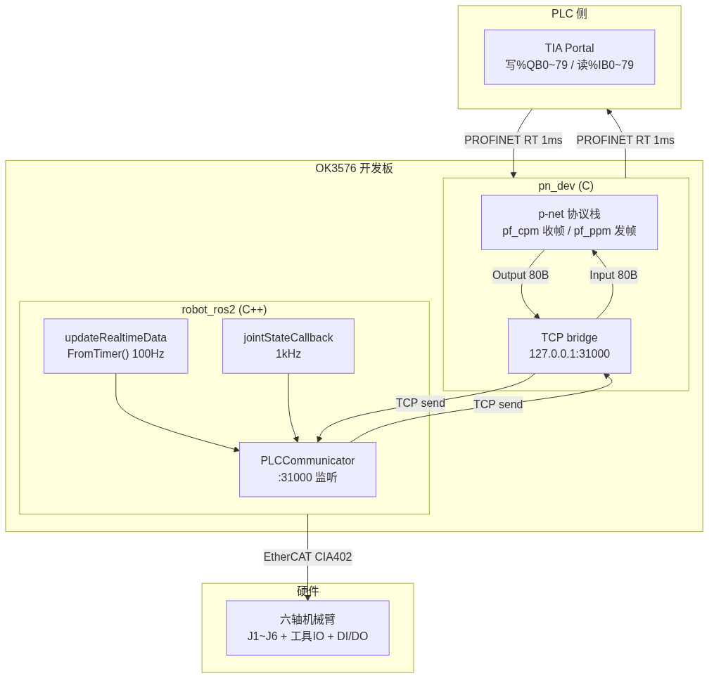
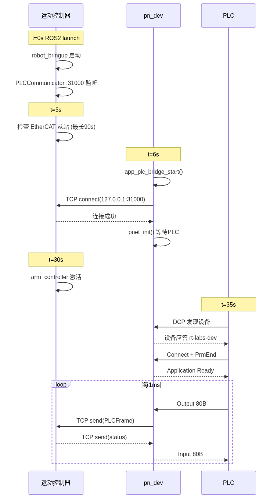
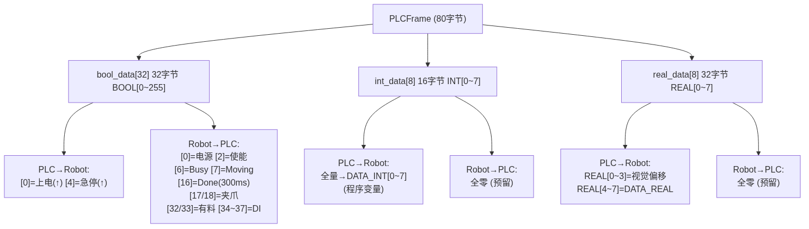
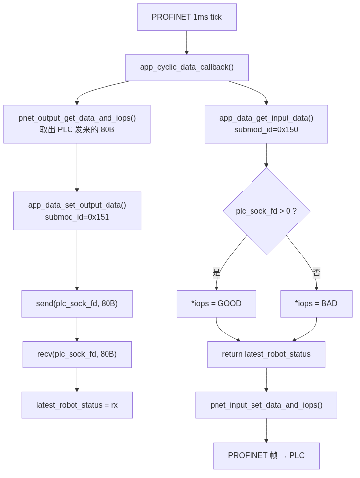

系统架构总览
本系统是一个PROFINET 设备从站（pn_dev），运行在 OK3576 ARM Linux 开发板上， 作为 PLC 与 六轴机械臂运动控制器（robot_ros2）之间的协议转换桥梁。
PLC 通过 PROFINET 网线直连开发板，每 1ms 发送 80 字节控制帧。 pn_dev 接收后原样透传给同板上的 ROS2 运动控制器（TCP localhost:31000）， 同时将运动控制器返回的 80 字节状态帧打包回 PROFINET 应答 PLC。 整个过程零数据解析——pn_dev 不知道帧内容的含义，只做 PROFINET ↔ TCP 的格式搬运。
运动控制器通过 EtherCAT 总线 连接 11 个从站（6 轴伺服 + 工具 IO + 板载 DI/DO + IMU）， 基于 IgH 主站实现 1kHz 实时控制，通过 MoveIt2 完成运动规划。
TIA Portal
1ms / 80字节
C 进程
127.0.0.1:31000
C++ 进程
CIA402
J1~J6
写%QB0~79 / 读%IB0~79"] end subgraph OK3576["OK3576 开发板"] subgraph pn_dev["pn_dev (C)"] pnet["p-net 协议栈
pf_cpm 收帧 / pf_ppm 发帧"] bridge["TCP bridge
127.0.0.1:31000"] end subgraph robot["robot_ros2 (C++)"] plc_comm["PLCCommunicator
:31000 监听"] timer["updateRealtimeDataFromTimer
100Hz 刷新状态帧"] jsc["jointStateCallback
1kHz 轨迹完成检测"] timer -->|"buildRobotToPLCFrame"| plc_comm jsc -->|"notifyPlcActionDone"| plc_comm end end subgraph hardware["硬件层"] arm["六轴机械臂
J1~J6 + 工具IO + DI/DO + 基板"] end PLC -->|"PROFINET RT 1ms"| pn_dev pnet -->|"Output 80B"| bridge bridge -->|"TCP send"| plc_comm plc_comm -->|"TCP send"| bridge bridge -->|"Input 80B"| pnet pn_dev -->|"PROFINET RT 1ms"| PLC robot -->|"EtherCAT CIA402"| arm

PLC 侧
只需做两件事：
- 导入 GSDML → 拖入 PLC Frame 模块
- 读写 %Q/%I 区（80字节），替代原来 TCP 通信
pn_dev 侧
透传桥接，不解析数据：
- PROFINET 收 80B → TCP send
- TCP recv 80B → PROFINET 发
- TCP 断开时 IOPS=BAD 通知 PLC
robot_ros2 侧
复用已有 PLCCommunicator：
- 31000 端口监听，收发 PLCFrame
- 100Hz 定时器刷新状态帧
- handlePLCData 处理上下电/急停/视觉偏移
启动与运行时序

下方时间轴可点击查看各时刻的详细状态。
点击按钮查看详情
事件总览
| 时刻 | Robot | pn_dev | PLC | 关键消息 |
|---|---|---|---|---|
| t=0s | ros2 launch PLCCommunicator :31000 监听 |
未启动 | 未连接 | — |
| t=5s | 轮询 11 个 EtherCAT 从站 等待 PREOP+（最长 90s） |
未启动 | 未连接 | — |
| t=6s | 接受 TCP 连接 | 启动 → app_plc_bridge_start() → TCP connect 127.0.0.1:31000 ✓ → pnet_init() 等待 PLC |
未连接 | pn_dev → Robot: TCP SYN Robot → pn_dev: TCP ACK |
| t=30s | arm_controller 激活 100Hz buildRobotToPLCFrame 1kHz jointStateCallback |
1ms tick 运行中 TCP 连通，状态帧有实际数据 |
未连接 | pn_dev ⇄ Robot: TCP PLCFrame 80B |
| t=35s | 收到第一帧 PLC 命令 handlePLCData() 开始工作 |
DCP 应答 rt-labs-dev Application Ready → 周期 IO |
DCP 发现 → SET IP Connect → PrmEnd 开始 1ms 周期 IO |
PLC → pn_dev: DCP SET PLC → pn_dev: CONNECT pn_dev → PLC: APPL_RDY |
| 稳态 | 100Hz 刷新状态帧 1kHz 轨迹完成检测 handlePLCData 处理命令 |
PROFINET ⇄ TCP 透传 每 100ms 轮询一次数据 |
每 1ms 写 Q 区 / 读 I 区 | PLC ⇄ pn_dev: 1ms RT pn_dev ⇄ Robot: TCP 80B |
启动顺序建议 & start_all.sh
运动控制器先启动（端口31000监听就绪），pn_dev后启动。pn_dev自带TCP重连，所以即使顺序反过来也能自动恢复。
PLCFrame 协议 (80字节)
32字节 BOOL 0~255"] plc --> int_grp["int_data[8]
16字节 INT 0~7"] plc --> real_grp["real_data[8]
32字节 REAL 0~7"] bool_grp --> bool_out["PLC 输出:
bit0=上电 bit4=急停"] bool_grp --> bool_in["Robot 输入:
bit0=电源 bit2=使能
bit6=Busy bit7=Moving
bit16=Done bit17/18=夹爪"] int_grp --> int_out["PLC 输出:
DATA_INT 0~7 程序变量"] int_grp --> int_in["Robot 输入:
全零 预留"] real_grp --> real_out["PLC 输出:
REAL 0~3=视觉偏移
REAL 4~7=程序变量"] real_grp --> real_in["Robot 输入:
全零 预留"]

PLC → Robot 信号表
| 地址 | 信号 | 触发 | 功能 |
|---|---|---|---|
| %QB0.0 | BOOL[0] | 上升沿 | 上电启动 |
| %QB0.4 | BOOL[4] | 上升沿 | 软急停 |
| %QD48~60 | REAL[0~3] | 连续 | 视觉偏移 X/Y/Z/R |
| %QB0~31 | BOOL[0~255] | 连续 | 程序变量 DATA_BOOL |
| %QW32~46 | INT[0~7] | 连续 | 程序变量 DATA_INT |
| %QD48~76 | REAL[0~7] | 连续 | 程序变量 DATA_REAL |
Robot → PLC 信号表
| 地址 | 信号 | 来源 | 说明 |
|---|---|---|---|
| %IB0.0 | BOOL[0] | gpio_safety_get_state() | 电源已上电 |
| %IB0.1 | BOOL[1] | EnableStatus==0 | 告警 |
| %IB0.2 | BOOL[2] | EnableStatus!=0 | 已使能 |
| %IB0.6 | BOOL[6] | trajectory_cache_.is_active | 轨迹执行中 |
| %IB0.7 | BOOL[7] | sum|qd| > 0.005 | 关节运动中 |
| %IB2.0 | BOOL[16] | done_expire 300ms | 动作完成 |
| %IB2.1~2 | BOOL[17~18] | AI0/AI1 > 128 | 夹爪闭合 |
| %IB4.0~1 | BOOL[32~33] | tool DI bit0/1 | 夹爪有料 |
| %IB4.2~5 | BOOL[34~37] | board DI bit0~3 | 板载传感器 |
数据流详解
本章是理解代码的核心入口，按三层展开：端到端数据路径 → 每个关键函数的内部逻辑 → p-net 框架的 buffer 机制。
3.1 端到端数据路径
取出 PLC 发来的 80 字节"] cdc --> gdi["app_data_get_input_data
submod_id = 0x150"] gdo --> asdo["app_data_set_output_data
submod_id = 0x151"] asdo --> send["TCP send PLCFrame 80 字节"] send --> recv["TCP recv PLCFrame 80 字节"] recv --> cache["缓存: latest_robot_status"] gdi --> check{"plc_sock_fd > 0 ?"} check -->|"是"| good["iops = PNET_IOXS_GOOD"] check -->|"否"| bad["iops = PNET_IOXS_BAD"] good --> ret["return latest_robot_status"] bad --> ret ret --> psi["pnet_input_set_data_and_iops"] psi --> frame["PROFINET 周期帧 - PLC"]

逐步走读（一次完整的 1ms 周期）
| 步骤 | 位置 | 线程 | 动作 |
|---|---|---|---|
| ① 帧到达 | pf_eth.c |
ETH RX | 网卡收到 PROFINET RT 帧（EtherType 0x8892）→ 提取 FrameID → 查表路由到 pf_cpm_c_data_ind() |
| ② Buffer 交换 | pf_cpm_driver_sw.c |
ETH RX | 验证循环计数器、拷贝负载到内部 p_buffer_cpm，置 new_buf = true |
| ③ 定时器触发 | sampleapp_common.c |
主线程 | 1ms tick → 计数器累加 → 每 100 tick 调用 app_handle_cyclic_data() |
| ④ 读取输出 | sampleapp_common.c |
主线程 | pnet_output_get_data_and_iops() → CPM 驱动从 p_buffer_app memcpy 出 80 字节 |
| ⑤ TCP 转发 | app_data.c |
主线程 | send() 80 字节到 127.0.0.1:31000 → 立即 recv() 80 字节响应，缓存到 latest_robot_status |
| ⑥ 写入输入 | sampleapp_common.c |
主线程 | app_data_get_input_data() 返回缓存状态 → pnet_input_set_data_and_iops() 写入 PPM buffer |
| ⑦ 帧发送 | pf_ppm_driver_sw.c |
主线程 | PPM 发送定时器到期 → pf_ppm_finish_buffer() 组装帧 → pnal_eth_send() 发出 |
时序特征
| 参数 | 值 | 说明 |
|---|---|---|
| PROFINET 周期 | 1 ms | PLC 侧发送周期 |
| 应用轮询周期 | 100 ms | APP_TICKS_UPDATE_DATA = 100，即每 100 个 tick 才触发一次数据回调 |
| TCP send+recv | 同步阻塞 | 在回调线程内 send() 后立即 recv(MSG_WAITALL)，会阻塞整个回调链 |
| IOPS 更新 | 实时 | 根据 plc_sock_fd 有效性动态设置 GOOD/BAD，PLC 无需额外心跳 |
3.2 关键函数详解
签名与位置
app_cyclic_data_callback() sampleapp_common.c:991 | static void | 主线程
输入
| 参数 | 含义 |
|---|---|
app_subslot_t * subslot | 当前被轮询的 subslot 描述符（含 slot_nbr、subslot_nbr、submodule_id、I/O 方向） |
void * tag | 指向 app_data_t 的上下文指针 |
逻辑
- 校验
tag非空，跳过 DAP subslot（DAP 没有 I/O 数据） - 输出路径（仅
outsize > 0的 subslot）：调用pnet_output_get_data_and_iops()拉取 PLC 发来的数据 → 若 IOPS=GOOD 则调用app_data_set_output_data()，否则调用app_set_outputs_default_value()（安全值） - 输入路径（仅
insize > 0的 subslot）：调用app_data_get_input_data()获取返回给 PLC 的数据 →pnet_input_set_data_and_iops()推入 p-net 栈 → 读回pnet_input_get_iocs()检查 PLC 侧消费状态
调用链
app_loop_forever() → app_handle_event_timer() → app_handle_cyclic_data() → app_utils_cyclic_data_poll() → 遍历所有已插拔 subslot 调用此回调
签名与位置
app_data_set_output_data() app_data.c:319 | int | 主线程（被 cyclic callback 调用）
输入
| 参数 | 含义 |
|---|---|
slot_nbr, subslot_nbr | PROFINET 槽位号 |
submodule_id | 子模块 ID，路由到不同处理分支 |
data, size | PLC 发来的原始字节 + 长度 |
PLC Frame 分支逻辑（submod_id = 0x151）
- 校验
size >= 80 - 若
plc_sock_fd > 0（已连接运动控制器）：将data拷贝为PLCFrame tx→send(fd, &tx, 80, MSG_NOSIGNAL)→ 立即同步recv(fd, &rx, 80, MSG_WAITALL)→ 加锁写入latest_robot_status - 若 send/recv 失败：关闭
plc_sock_fd，置 -1（TCP 后台线程会在 1 秒后重连）
其他分支
| submodule_id | 行为 |
|---|---|
| 0x131（Digital Out） | 1 字节 → 根据 bit7 控制 LED → 串口输出变化 |
| 0x132（Digital IO） | 同上，1 字节输出 |
| 0x140（Echo） | 8 字节 → 存入 echo_outputdata[]，供输入侧乘以增益后回传 |
签名与位置
app_data_get_input_data() app_data.c:218 | uint8_t * | 主线程
输出
| 输出参数 | 含义 |
|---|---|
返回值 | 指向静态缓冲区的指针（调用者不应释放） |
*size | 数据长度（PLC Frame = 80，Digital = 1，Echo = 8） |
*iops | IO Provider Status：GOOD（TCP 连通）或 BAD（TCP 断开） |
PLC Frame 分支逻辑（submod_id = 0x150）
- 加锁
status_mutex，将latest_robot_status拷贝到线程本地static缓冲区 - 设置
*size = 80 - 若
plc_sock_fd > 0→*iops = PNET_IOXS_GOOD；否则 →*iops = PNET_IOXS_BAD - 返回缓冲区指针
IOPS 设计意图
PLC 侧读到 IOPS=BAD 时，应判定运动控制器离线，进入安全状态。这是控制链路健康监测的唯一指标——无需额外心跳协议。
签名与位置
plc_tcp_thread_fn() app_data.c:118 | static void * | 独立线程
线程模型
由 app_plc_bridge_start() 在启动时创建。独立于主事件循环线程运行。
逻辑
- 外层循环（重连）：
socket()→connect(127.0.0.1:31000)，失败则 sleep(1) 重试 - 连接成功：将 fd 写入全局
plc_sock_fd（主线程通过此变量感知连接状态） - 内层循环（保活）：sleep(1) 循环，直到检测到 fd 被主线程关闭（send/recv 失败时）或线程被通知退出
- 断开：
close(fd)，若plc_sock_fd == fd则置 -1，回到外层循环重连
注意
此线程不参与数据收发——实际 send/recv 发生在主线程的 app_data_set_output_data() 中。此线程仅负责 connect / reconnect 生命周期管理。
3.3 p-net 框架内部数据流
CPM — Consumer Protocol Machine
PLC → 设备（Output）
- 接收：异步，在 ETH RX 线程中
- 缓冲：双缓冲（
p_buffer_cpm/p_buffer_app）+ 互斥锁 - 标志：
new_buf = true表示新数据到达 - 读取：主线程通过
pf_cpm_get_data_and_iops()拉取 - 看门狗：Data Hold Timer，每 control_interval 递增 dht，超时触发 ABORT
- 关键文件：
pf_cpm.cpf_cpm_driver_sw.c
PPM — Provider Protocol Machine
设备 → PLC（Input）
- 写入：主线程通过
pf_ppm_set_data_and_iops()写入buffer_data[] - 缓冲：单缓冲 + 互斥锁
- 发送：调度器定时触发
pf_ppm_drv_sw_send() - 组装：
pf_ppm_finish_buffer()将 buffer_data memcpy 到以太网帧 + 插入循环计数器 + 数据状态位 - 周期：由
control_interval决定（来自 IOCR 参数 × reduction_ratio） - 关键文件：
pf_ppm.cpf_ppm_driver_sw.c
一帧数据的完整旅程
PLC 发出 PROFINET 帧
│
▼ [ETH RX 线程 — 异步]
pf_eth_recv() ← 网卡收到帧
→ pf_cpm_c_data_ind() ← FrameID 路由
→ pf_cpm_put_buf() ← 双缓冲交换，new_buf = true
→ pf_fspm_data_status_changed()
│
▼ [主线程 — 1ms tick]
pnet_handle_periodic()
→ pf_scheduler_tick() ← 触发到期定时器
→ pf_ppm_drv_sw_send() ← PPM 发送上次写入的数据
→ pf_cpm_control_interval_expired() ← CPM 看门狗
│
▼ [主线程 — 每 100ms]
app_handle_cyclic_data()
→ app_utils_cyclic_data_poll()
→ app_cyclic_data_callback()
→ pnet_output_get_data_and_iops() ← 拉取 CPM 缓冲
→ app_data_set_output_data() ← TCP send + recv
→ app_data_get_input_data() ← 读取缓存状态
→ pnet_input_set_data_and_iops() ← 推入 PPM 缓冲
│
▼ [主线程 — 下次 PPM 定时器到期]
pf_ppm_drv_sw_send()
→ pf_ppm_finish_buffer() ← 组装以太网帧
→ pnal_eth_send() ← 网卡发出
PLC 收到 PROFINET 帧
模块与调用关系
聚焦两层关系：函数之间谁调用谁，源文件之间谁依赖谁。
4.1 函数调用关系图
TCP 线程启动"] main --> pnet["pnet_init
等待 PLC 连接"] end subgraph cyclic["PROFINET 1ms 周期"] direction TB cdc["app_cyclic_data_callback"] cdc --> setout["app_data_set_output_data
TCP send PLCFrame"] cdc --> getin["app_data_get_input_data
TCP recv - PROFINET"] end subgraph robot["robot_ros2 核心 100Hz"] direction TB timer["100Hz 定时器"] --> build["buildRobotToPLCFrame"] build --> update["updateRobotStatus"] jsc["jointStateCallback 1kHz"] --> notify["notifyPlcActionDone"] notify --> build end subgraph comm["TCP localhost :31000"] plc_comm["PLCCommunicator
收发 80 字节 PLCFrame"] end setout --> plc_comm plc_comm --> getin update --> plc_comm plc_comm --> handle["handlePLCData
处理上下电/急停"]
4.2 函数调用链
启动阶段
| 深度 | 函数 | 文件 | 职责 |
|---|---|---|---|
| 0 | main() | ports/linux/sampleapp_main.c | 入口：解析 CLI 参数、读取网卡 IP |
| 1 | → app_data_init() | app_data.c | 打开 /dev/ttyFIQ0 串口调试输出 |
| 1 | → app_plc_bridge_start() | app_data.c | 创建 TCP 连接线程 |
| 1 | → app_init() | sampleapp_common.c | pnet_init_only() 初始化协议栈 |
| 1 | → app_start() | sampleapp_common.c | 创建主事件线程（或阻塞在主线程） |
| 2 | → app_loop_forever() | sampleapp_common.c | plug DAP → 进入 os_event_wait 事件循环 |
稳态运行阶段（1ms tick → 事件分发）
| 深度 | 函数 | 文件 | 频率 |
|---|---|---|---|
| 0 | app_loop_forever() | sampleapp_common.c | 永久循环 |
| 1 | → app_handle_event_timer() | sampleapp_common.c | 每 1ms |
| 2 | → update_button_states() | sampleapp_common.c | 每 10ms（APP_TICKS_READ_BUTTONS=10） |
| 2 | → app_handle_cyclic_data() | sampleapp_common.c | 每 100ms（APP_TICKS_UPDATE_DATA=100） |
| 3 | → app_utils_cyclic_data_poll() | app_utils.c | 遍历所有 plugged subslot |
| 4 | → app_cyclic_data_callback() | sampleapp_common.c | 每个 subslot 一次 |
| 5 | → pnet_output_get_data_and_iops() | pnet_api.c | p-net API：拉取 PLC 数据 |
| 5 | → app_data_set_output_data() | app_data.c | TCP send → robot |
| 5 | → app_data_get_input_data() | app_data.c | 读取缓存状态 |
| 5 | → pnet_input_set_data_and_iops() | pnet_api.c | p-net API：推入 PLC 数据 |
| 2 | → pnet_handle_periodic() | pnet_api.c | 每 1ms |
| 3 | → pf_scheduler_tick() | pf_scheduler.c | 触发到期定时器（CPM/PPM/CMIO） |
robot_ros2 侧函数调用链（参考）
| 深度 | 函数 | 文件 | 频率 |
|---|---|---|---|
| 0 | 100Hz 定时器回调 | robot_ros2.cpp | 100Hz |
| 1 | → buildRobotToPLCFrame() | robot_ros2.cpp | 组装 80 字节状态帧 |
| 2 | → updateRobotStatus() | robot_ros2.cpp | 读取各传感器 / 关节状态 → 填充 PLCFrame |
| — | PLCCommunicator::recv() | plc_communicator.cpp | 收到 PLC Frame → 回复当前状态帧 |
| — | → handlePLCData() | robot_ros2.cpp | 解析 BOOL/INT/REAL → 执行上电/急停/视觉偏移 |
| 0 | jointStateCallback() | robot_ros2.cpp | 1kHz（EtherCAT PDO） |
| 1 | → notifyPlcActionDone() | robot_ros2.cpp | 检测 is_active 下降沿 → 设置 done_expire |
4.3 文件职责与依赖
pn_dev 源文件（本项目）
| 文件 | 职责 |
|---|---|
sampleapp_main.c | Linux 入口：CLI 解析、调用 init/start |
sampleapp_common.c | 核心：事件循环、14 个 p-net 回调、DAP 插拔 |
app_data.c | 数据 I/O 实现：TCP 桥接、串口调试、参数存储 |
app_gsdml.c | GSDML 目录：6 个模块、12 个子模块的静态定义 |
app_utils.c | 工具：AR 管理、slot/subslot 插拔、配置初始化 |
app_log.c | 日志：5 级过滤、运行时可调 |
p-net 协议栈（预编译 SDK）
| 文件 | 职责 |
|---|---|
pnet_api.c | 公共 API：所有 pnet_*() 函数入口 |
pf_cpm.c | Consumer：PLC→设备数据接收管理 |
pf_ppm.c | Provider：设备→PLC 数据发送管理 |
pf_cpm_driver_sw.c | CPM 软件驱动：双缓冲 + 互斥锁 |
pf_ppm_driver_sw.c | PPM 软件驱动：定时发送 + 帧组装 |
pf_scheduler.c | 调度器：基于绝对时间的优先级队列 |
pf_eth.c | 以太网：FrameID 路由、LLDP/IP 分发 |
pf_cmdev.c | 连接管理：CONNECT/RELEASE/ABORT |
文件依赖图
sampleapp_main.c (ports/linux/)
|
|-- include --> sampleapp_common.h, app_gsdml.h, app_data.h
|-- 调用 ----> app_data_init()
|-- 调用 ----> app_plc_bridge_start()
|-- 调用 ----> app_init(), app_start()
|
v
sampleapp_common.c (核心)
|
|-- include --> app_gsdml.h, app_data.h, app_utils.h, app_log.h
|-- 调用 ----> app_utils_cyclic_data_poll()
|-- 调用 ----> app_data_set_output_data()
|-- 调用 ----> app_data_get_input_data()
|-- 调用 ----> pnet_output_get_data_and_iops()
|-- 调用 ----> pnet_input_set_data_and_iops()
|-- 调用 ----> pnet_handle_periodic()
|
v
+-------------------+-------------------+-------------------+
| app_data.c | app_utils.c | app_gsdml.c |
| TCP 桥接/PLC帧 | AR/Slot 管理 | 模块/子模块目录 |
| 串口调试/参数 | 配置初始化 | 查找函数 |
+-------------------+-------------------+-------------------+
| | |
+-------+-------+-------+ |
| |
v v
app_log.c (所有文件都 include)
(独立,无项目依赖) sampleapp_common.h
|
v
p-net SDK
libpnet.a (预编译)
pnet_api.c pf_cpm.c
pf_ppm.c pf_eth.c
pf_scheduler.c pf_cmdev.c
4.4 线程模型
| 线程 | 执行函数 | 触发方式 | 频率 | 关键数据 |
|---|---|---|---|---|
| 主事件线程 | app_loop_forever() |
os_event_wait 阻塞等待 | 事件驱动（定时器 1ms） | app_data_t、subslot 列表 |
| 主事件线程 | app_cyclic_data_callback() |
app_utils_cyclic_data_poll 遍历 | 每 100ms | subslot->outdata、insize |
| 主事件线程 | app_data_set_output_data() |
cyclic callback 调用 | 每 100ms | plc_sock_fd（读） |
| ETH RX 线程 | pf_eth_recv() |
网卡中断 / poll | 每帧到达 | CPM 双缓冲（写） |
| TCP Bridge 线程 | plc_tcp_thread_fn() |
pthread_create 启动 | 后台循环 | plc_sock_fd（写） |
| 后台工作线程 | pf_bg_worker() |
p-net 内部创建 | 低频 | NVM 保存、端口状态 |
并发注意事项
plc_sock_fd被主线程（读/写/关闭）和 TCP Bridge 线程（写/关闭）共享，无互斥锁保护——存在竞态窗口latest_robot_status由主线程（写）和主线程自身（读）使用，有 status_mutex 保护- CPM 双缓冲由 ETH RX 线程（写
p_buffer_cpm）和主线程（读p_buffer_app）共享，有 cpm_buf_lock 保护 - PPM 单缓冲仅主线程访问（写 buffer_data + 发送），无并发问题
app_data_set_output_data()中的同步recv(MSG_WAITALL)会阻塞整个主事件线程直至收到运动控制器响应——若机器人侧处理慢，会影响 PROFINET 周期
关键算法与公式
数学符号
| 符号 | 含义 | 数据来源 |
|---|---|---|
| $$\dot{q}_i$$ | 第 i 个关节的角速度（rad/s） | /joint_states topic，EtherCAT PDO 周期 1kHz |
| $$i = 0 \ldots 5$$ | 六轴机械臂 J1 ~ J6 | qd_actual[6] 数组 |
| $$0.005$$ | 速度判定阈值（rad/s） | 经验值，用于滤除编码器微小噪声 |
| $$\text{is\_moving}$$ | 是否正在运动的布尔结果 | 写入 BOOL[7] 和 BOOL[15] |
公式与含义
六个关节的角速度各自取绝对值后相加，若总和超过 0.005 rad/s 则判定为正在运动。任一关节有微动即触发，避免编码器噪声导致误判。
代码实现
buildRobotToPLCFrame() robot_ros2.cpp:5116
在 100Hz 定时器回调中执行：读取 qd_actual[0..5] 六轴速度 → 逐轴 fabs() 累加 → 与 0.005 比较 → 结果同时写入 BOOL[7]（Moving）和 BOOL[15]（Action Busy）。两个信号在 PLC 侧可分别用于状态监控和动作握手。
计算过程
| 步骤 | 操作 | 示例值 | 说明 |
|---|---|---|---|
| ① 读取 | 从 /joint_states 取 qd_actual[0..5] | [0.12, -0.08, 0.0, 0.0, 0.0, 0.15] | 6 轴角速度 (rad/s)，EtherCAT PDO 提供 |
| ② 取绝对值 | fabs(qd_actual[i]) | [0.12, 0.08, 0.0, 0.0, 0.0, 0.15] | 负号仅表示方向，运动判断只看幅度 |
| ③ 累加 | sum = fabs(q0)+fabs(q1)+...+fabs(q5) | 0.12+0.08+0+0+0+0.15 = 0.35 | 任一轴有微动都会贡献到总和 |
| ④ 比较 | sum > 0.005 ? | 0.35 > 0.005 → TRUE | 阈值 0.005 rad/s ≈ 0.3 deg/s，滤除编码器噪声 |
| ⑤ 写入 | 设置 PLCFrame 对应 bit | BOOL[7]=1, BOOL[15]=1 | PLC 读到 %IB0.7=1 和 %IB1.7=1 |
数学符号
| 符号 | 含义 | 数据来源 |
|---|---|---|
| $$t_{\text{now}}$$ | 当前时间戳 | 系统时钟 std::chrono::steady_clock |
| $$t_{\text{done}}$$ | 轨迹完成时刻 + 300ms | done_expire 变量，完成瞬间设定 |
| $$\text{BOOL[16]}$$ | Action Done 信号 | PLC 侧 %IB2.0，上升沿锁存 |
公式与含义
运动轨迹执行完毕后，将 Done 信号保持 300ms 高电平，然后自动清零。300ms 窗口足够 PLC 扫描周期捕获上升沿并锁存，同时避免了电平持续为高导致无法区分"上一次完成"和"新一次完成"。
代码实现
notifyPlcActionDone() robot_ros2.cpp（done_expire 赋值）
buildRobotToPLCFrame() robot_ros2.cpp（BOOL[16] 赋值）
jointStateCallback（1kHz）中检测 trajectory_cache_.is_active 下降沿（true→false），调用 notifyPlcActionDone() 设置 done_expire = now + 300ms。在 100Hz 定时器中，buildRobotToPLCFrame() 比较当前时间与 done_expire，决定 BOOL[16] 的值。
计算过程
| 步骤 | 时序 | is_active | done_expire | BOOL[16] | 说明 |
|---|---|---|---|---|---|
| ① 轨迹执行中 | T=1000ms | TRUE | 0（未设置） | 0 | 正常执行，Done=0 |
| ② 轨迹结束瞬间 | T=2500ms | TRUE→FALSE | → 2800ms | → 1 | jointStateCallback 检测下降沿，设 done_expire = now+300ms |
| ③ Done 脉冲保持 | T=2550ms | FALSE | 2800ms | 1 | 2550 < 2800，仍在 300ms 窗口内 |
| ④ Done 脉冲结束 | T=2810ms | FALSE | 2800ms | 0 | 2810 > 2800，窗口关闭，自动清零 |
PLC 侧应在步骤②~③期间捕获 BOOL[16] 的上升沿并锁存。即使 PLC 扫描周期为 10ms，300ms 窗口足够扫描 30 次。
数学符号
| 符号 | 含义 | 数据来源 |
|---|---|---|
| $$\text{bit}_{\text{cur}}$$ | 当前 PROFINET 周期的信号位值（0 或 1） | 本周期 PLC 发来的 PLCFrame 对应 bit |
| $$\text{bit}_{\text{prev}}$$ | 上一周期的信号位值（0 或 1） | 上一帧缓存的 PLCFrame 对应 bit |
| $$\land$$ | 逻辑与 | — |
| $$\neg$$ | 逻辑非 | — |
| $$\text{trigger}$$ | 边沿触发输出 | TRUE 时执行对应动作（上电/急停） |
公式与含义
仅当信号从 0 变为 1 的瞬间才触发动作。前一帧为 0 且当前帧为 1 时 trigger=TRUE，其他三种情况（0→0、1→0、1→1）均为 FALSE。这确保了：按住不放不会重复触发、松开后再按才会再次触发。
代码实现
handlePLCData() robot_ros2.cpp:5198
每收到一帧 PLC 数据时：用 bool_data[0].bit0 当前值与 prev_bool_data[0].bit0 比较检测 BOOL[0] 上升沿 → 触发 gpio_safety_start()；用 bit4 同理检测 BOOL[4] 上升沿 → 触发 triggerStop()。处理完后将当前帧拷贝到 prev_* 供下一帧比较。
计算过程
| 周期 | bit_cur | bit_prev | bit_cur ∧ ¬bit_prev | trigger | 含义 |
|---|---|---|---|---|---|
| N-1（初始） | 0 | 0 | 0 ∧ ¬0 = 0 ∧ 1 = 0 | FALSE | 还没按 |
| N（按下瞬间） | 1 | 0 | 1 ∧ ¬0 = 1 ∧ 1 = 1 | TRUE ✅ | 触发！gpio_safety_start() |
| N+1（按住不放） | 1 | 1 | 1 ∧ ¬1 = 1 ∧ 0 = 0 | FALSE | 持续按住，不再触发 |
| N+2（松开） | 0 | 1 | 0 ∧ ¬1 = 0 ∧ 0 = 0 | FALSE | 下降沿，不触发 |
| N+3（再次按下） | 1 | 0 | 1 ∧ ¬0 = 1 | TRUE ✅ | 再次触发！ |
四种输入组合中只有 0→1 输出 TRUE。这就是"上升沿"的数学本质——布尔逻辑的边沿检测器。
数学符号
| 符号 | 含义 | 数据来源 |
|---|---|---|
| $$\text{plc\_sock\_fd}$$ | 到运动控制器的 TCP socket 文件描述符 | socket() + connect() 返回值，-1 表示未连接 |
| $$\text{IOPS}$$ | PROFINET IO Provider Status | 随每帧输入数据上报给 PLC |
| $$\text{GOOD}$$ | 数据有效（PNET_IOXS_GOOD） | TCP 已连接，运动控制器在线 |
| $$\text{BAD}$$ | 数据无效（PNET_IOXS_BAD） | TCP 断开，运动控制器离线或未启动 |
公式与含义
用 TCP socket 文件描述符的有效性作为运动控制器是否在线的代理指标。TCP 连接存活 = 运动控制器在运行，无需额外心跳协议。PLC 侧通过 IOPS 状态字就能实时感知机器人侧是否在线。
代码实现
app_data_get_input_data() app_data.c（pn_dev 侧）
每次 p-net 栈准备发送周期输入帧时调用此函数。检查全局变量 plc_sock_fd（由后台 TCP 线程维护）：fd > 0 则设置 *iops = PNET_IOXS_GOOD 并返回最新缓存的状态帧；fd = -1 则设置 *iops = PNET_IOXS_BAD，PLC 侧将看到数据无效告警。
计算过程
| 场景 | plc_sock_fd | 判断 | IOPS | PLC 看到的效果 |
|---|---|---|---|---|
| 运动控制器在线 | 5（有效的 fd） | 5 > 0 → TRUE | GOOD | 数据正常，机器人状态可信 |
| 运动控制器未启动 | -1 | -1 > 0 → FALSE | BAD | 数据无效告警，PLC 应进入安全状态 |
| TCP 连接断开 | → -1（被主线程关闭） | -1 > 0 → FALSE | BAD | 同上报错，后台线程开始重连 |
| TCP 重连成功 | → 6（新 fd） | 6 > 0 → TRUE | GOOD | 恢复，告警解除 |
这是一个极简的健康代理：不需要额外的 TCP 心跳包，利用 fd 有效性直接判断对端是否在线。值判断仅一步整数比较（> 0），零计算开销。
当前修改状态
pn_dev 侧 7/7 完成
| app_gsdml.h | +6行 新增常量 |
| app_gsdml.c | +32行 注册模块 |
| app_data.c | +140行 TCP桥接 |
| app_data.h | +11行 声明 |
| sampleapp_main.c | +1行 启动调用 |
| GSDML XML | +38行 模块定义 |
编译状态: 通过
robot_ros2 侧 2/2 完成
| updateRealtimeDataFromTimer() | +6行 刷新PLC状态帧 |
| jointStateCallback() | +1行 通知轨迹完成 |
编译状态: 待验证
PLC 侧 待执行
| 导入 GSDML | 含 IDM_50 模块 |
| 配置 Slot 1 | PLC Frame 模块 |
| PLC 程序 | %Q/%I 替代 TCP |
文档清单
| 文档 | 受众 | 说明 |
|---|---|---|
| PLC接口对接文档.md | PLC 程序员 | IO地址映射、信号定义、操作流程 |
| 修改计划.md | pn_dev 开发者 | 7项修改的原因和具体改法 |
| 机器人控制器修改计划.md | robot_ros2 开发者 | 2处修改的原因和具体改法 |
| 系统架构文档.html | 所有人 | 本文档 — 交互式架构总览 |
| PLC接口对接文档.html | PLC 程序员 | 交互式信号映射 + 结构图 |
| mermaid/*.md | 所有人 | Obsidian 可渲染的架构图 |
关键函数解析
按选取标准（多文件调用 / 模块入口出口 / 关键状态变更 / 错误高发点）纳入 7 个核心函数。 点击索引标签快速跳转。
函数索引
创建 TCP 桥接线程，连接运动控制器的 PLCCommunicator 端口 31000。连接成功后，主线程通过 plc_sock_fd 全局变量收发数据。
工程含义
工业设备上电自检后的通信链路建立。类似于 PLC 上电后尝试连接远程 IO 子站——设备主动发起 TCP 连接，而不是等待连接。1 秒重试间隔是嵌入式领域的常见做法，避免 CPU 空转的同时保证恢复速度。
函数签名
int app_plc_bridge_start(void);
| 参数/返回 | 类型 | 含义 | 说明 |
|---|---|---|---|
| 返回值 | int | 0=成功，-1=失败 | pthread_create 返回值 |
调用时机
| 阶段 | 调用者 | 调用条件 | 频率 |
|---|---|---|---|
| 启动 | main() (sampleapp_main.c) | 进程启动，p-net 栈初始化之前 | 一次 |
数据流
127.0.0.1:31000"] --> FN["app_plc_bridge_start()"] FN --> TID["plc_thread_id
全局变量"] FN --> RUN["plc_thread_running = true"] FN --> THREAD["plc_tcp_thread_fn()
后台线程启动"] style FN fill:#448aff,color:#fff
关键步骤
- 创建
pthread_create(&plc_thread_id, NULL, plc_tcp_thread_fn, NULL) - 返回 0 成功，-1 失败
依赖关系
plc_tcp_thread_fn()— 由本函数创建的线程执行app_data_set_output_data()— 依赖 plc_sock_fd 有效才能 send/recv
常见错误与陷阱
| 错误现象 | 根因 | 正确做法 |
|---|---|---|
| TCP 连接迟迟不建立 | 运动控制器未启动或端口 31000 未监听 | 先启动运动控制器，再启动 pn_dev；TCP 线程自带 1 秒重试 |
p-net 应用的主事件循环。plug DAP → 进入 os_event_wait 阻塞等待 → 分发定时器/告警/连接/中止事件。所有 p-net 协议栈回调在此线程中触发。
工程含义
实时嵌入式系统的主循环模式（Main Loop Pattern）。所有实时控制系统都有一个永不退出的主循环：阻塞等待事件 → 处理 → 回到阻塞。类似 PLC 的 OB1 循环扫描、FreeRTOS 的 vTaskStartScheduler。5 个事件位的优先级分发类似于中断优先级——TIMER 和 READY_FOR_DATA 是高频事件，ALARM/ABORT 是低频但紧急的。
函数签名
void app_loop_forever(void * arg);
| 参数/返回 | 类型 | 含义 | 说明 |
|---|---|---|---|
arg | void * | 指向 app_data_t | 由 app_start() 传入 |
调用时机
| 阶段 | 调用者 | 调用条件 | 频率 |
|---|---|---|---|
| 启动→永久 | app_start() (sampleapp_common.c) | 可能在新线程中运行 | 一次，内部永久循环 |
数据流
阻塞等待事件"] ISR["p-net 栈回调"] -->|"APP_EVENT_READY_FOR_DATA"| WAIT WAIT --> TIMER["app_handle_event_timer()"] WAIT --> AR["app_handle_event_ar()"] TIMER --> CYCLIC["app_handle_cyclic_data()
每100ms触发数据收发"] TIMER --> PERIODIC["pnet_handle_periodic()
调度器 tick"] CYCLIC --> IO["PROFINET IO 数据流"] style WAIT fill:#448aff,color:#fff
关键步骤
- plug 调用
app_plug_dap()将所有 DAP 子模块注册到 p-net 栈 - 等待
os_event_wait(main_events, 5个事件掩码, 超时)阻塞 - 分发 按位检查事件：APP_EVENT_TIMER → app_handle_event_timer；APP_EVENT_READY_FOR_DATA → pnet_application_ready；APP_EVENT_ALARM → 告警处理；APP_EVENT_SM_RELEASED → 初始化数据+IOXS；APP_EVENT_ABORT → 移除 AR
依赖关系
app_init()— 初始化 p-net 栈和事件系统app_plc_bridge_start()— 确保 TCP 连接先于数据到达
app_handle_event_timer()— 每次 TIMER 事件触发app_cyclic_data_callback()— 通过 app_handle_cyclic_data 间接调用
常见错误与陷阱
| 错误现象 | 根因 | 正确做法 |
|---|---|---|
| CPU 100% | os_event_wait 超时设为 0 或无超时事件丢失 | 确保至少一个事件源（定时器）定期触发 |
| 周期数据不更新 | APP_EVENT_TIMER 未设置或 app_handle_cyclic_data 因为未连接而跳过 | 检查 PLC 是否已建立 AR |
每 1ms tick 调用一次，内部计数器累加到 100 后才真正触发 app_utils_cyclic_data_poll()。实现 100ms 周期的数据轮询。
工程含义
分频器（Prescaler），在硬件定时器领域极其常见。1ms tick 太快不适合做复杂 IO 处理，通过计数器分频到 100ms 得到合理的应用层处理周期。类似于 STM32 定时器的 PSC（预分频器）——硬件以高频计数，软件以低频响应。
函数签名
static void app_handle_cyclic_data(app_data_t * app);
调用时机
| 阶段 | 调用者 | 调用条件 | 频率 |
|---|---|---|---|
| 运行时 | app_handle_event_timer() | 已连接到控制器 | 每 1ms 调用，每 100 次执行一次有效逻辑 |
数据流
来源：每次调用自增
影响：遍历所有 subslot 触发 app_cyclic_data_callback
关键步骤
- 累加
app->process_data_tick_counter++ - 判断 若 < APP_TICKS_UPDATE_DATA (100) 则直接返回
- 归零 重置计数器为 0
- 遍历
app_utils_cyclic_data_poll(&app->main_api)
对每个 plugged subslot 的周期数据回调。OUTPUT 方向拉取 PLC 数据并转发给运动控制器；INPUT 方向从缓存读取机器人状态并推入 p-net 栈。
工程含义
PROFINET 的IO 扫描周期，等同于 PLC 的"输入采样→程序执行→输出刷新"三阶段中的 I/O 刷新阶段。OUTPUT 先执行（先收 PLC 命令再动作），INPUT 后执行（用最新状态回复），这个顺序符合工业安全原则——先听指令再报告状态。
函数签名
static void app_cyclic_data_callback(
app_subslot_t * subslot, /* 当前 subslot 描述符 */
void * tag /* app_data_t 上下文 */
);
调用时机
| 阶段 | 调用者 | 调用条件 | 频率 |
|---|---|---|---|
| 运行时 | app_utils_cyclic_data_poll() | subslot 已 plugged 且 outsize/insize > 0 | 每 100ms，每个 subslot 一次 |
数据流
从 CPM 双缓冲拉取 80B"] --> ASDO["app_data_set_output_data()"] ASDO --> SEND["TCP send → :31000"] SEND --> RECV["TCP recv ← :31000"] RECV --> CACHE["latest_robot_status
缓存最新机器人状态"] end subgraph INPUT["INPUT 方向: Robot → PLC"] GDI["app_data_get_input_data()
读缓存 + 判定 IOPS"] --> PSI["pnet_input_set_data_and_iops()"] PSI --> PPM["写入 PPM 单缓冲"] PPM --> FRAME["PPM 定时器触发 → 以太网帧 → PLC"] end style ASDO fill:#ff9100,color:#fff style GDI fill:#448aff,color:#fff
关键步骤
- 校验 tag 非空 → 跳过大於 DAP subslot
- 拉取 OUTPUT 方向：
pnet_output_get_data_and_iops()→ 数据有效则调用app_data_set_output_data()，无效则安全默认值 - 推送 INPUT 方向：
app_data_get_input_data()→pnet_input_set_data_and_iops()→ 读回 IOCS
依赖关系
app_plug_dap()— subslot 必须先插拔才能被 poll 到app_plc_bridge_start()— plc_sock_fd 必须已创建
app_data_set_output_data()— 每次有 output 的 subslotapp_data_get_input_data()— 每次有 input 的 subslot
常见错误与陷阱
| 错误现象 | 根因 | 正确做法 |
|---|---|---|
| INPUT 数据始终为零 | 运动控制器未连接，plc_sock_fd=-1，IOPS=BAD 但数据仍返回空缓存 | 检查 TCP 连接状态，确认运动控制器已启动 |
| PLC 数据偶发丢失 | send+recv 同步阻塞，若机器人响应慢会延迟整个 100ms 周期 | 考虑将 send/recv 改为非阻塞或独立线程 |
PLC→运动控制器转发。按 submodule_id 路由：PLC Frame (0x151) 走 TCP 80 字节透传；Digital Out (0x131) 控制 LED；Echo (0x140) 存入 echo 缓存。
工程含义
协议转换网关的核心转发逻辑。PROFINET 侧收到 80 字节 → 原样 TCP 发出 → 立即读取响应 → 缓存供下一周期上报。同步 send+recv 的模式意味着一个 PROFINET 周期内必须完成一次完整的 TCP 往返，对运动控制器的响应时间有硬实时要求。
函数签名
int app_data_set_output_data(
uint16_t slot_nbr, /* PROFINET 槽位号 */
uint16_t subslot_nbr, /* 子槽位号 */
uint32_t submodule_id, /* 子模块 ID，决定处理分支 */
uint8_t * data, /* PLC 发来的原始字节 */
uint16_t size /* 数据长度 */
);
调用时机
| 阶段 | 调用者 | 调用条件 | 频率 |
|---|---|---|---|
| 运行时 | app_cyclic_data_callback() | IOPS=GOOD 且 outsize>0 | 每 100ms |
关键步骤 (PLC Frame 分支)
- 校验
size >= sizeof(PLCFrame)，不满足则返回 - 转发
send(plc_sock_fd, &tx, 80, MSG_NOSIGNAL)→ 立即recv(plc_sock_fd, &rx, 80, MSG_WAITALL) - 缓存 加锁
status_mutex→ 拷贝 rx 到latest_robot_status - 容错 send/recv 失败 → close(plc_sock_fd) → set fd=-1 → TCP 后台线程 1 秒后重连
常见错误与陷阱
| 错误现象 | 根因 | 正确做法 |
|---|---|---|
| send 成功但 recv 超时 | 运动控制器 busy 或 recv 缓冲区为空，MSG_WAITALL 阻塞整个主线程 | 设置 SO_RCVTIMEO，或在独立线程中处理 TCP 收发 |
| plc_sock_fd 竞态 | 主线程正在 send/recv 时 TCP 线程 close 了 fd | 加锁保护 fd，或让 TCP 线程只负责连接不负责关闭 |
运动控制器→PLC 状态返回。按 submodule_id 路由：PLC Frame (0x150) 返回 latest_robot_status + IOPS；Digital In 返回 button/echo 位；Echo 返回增益乘法结果。
工程含义
设备健康状态上报。IOPS 机制是工业通信中的"心跳替代方案"——不需要额外的周期性心跳帧，利用已有的周期数据帧携带连接状态。PROFINET 标准规定 IOPS=BAD 时 PLC 应进入安全状态（如停止输出），这是功能安全的一部分。
函数签名
uint8_t * app_data_get_input_data(
uint16_t slot_nbr, uint16_t subslot_nbr, uint32_t submodule_id,
bool button_pressed, /* 按钮 1 状态 */
uint16_t * size, /* [out] 数据长度 */
uint8_t * iops /* [out] IOPS: GOOD/BAD */
);
输出
| submodule_id | *size | *iops | 返回值内容 |
|---|---|---|---|
| 0x150 (PLC Frame In) | 80 | GOOD/BAD (取决于 plc_sock_fd) | latest_robot_status 拷贝 |
| 0x130 (Digital In) | 1 | GOOD | I1.0=Q1.0 echo, I1.7=button |
关键步骤 (PLC Frame 分支)
- 加锁
pthread_mutex_lock(&status_mutex) - 拷贝
memcpy(status_buf, &latest_robot_status, 80) - 解锁
pthread_mutex_unlock(&status_mutex) - 判定
*iops = (plc_sock_fd > 0) ? PNET_IOXS_GOOD : PNET_IOXS_BAD
TCP 连接生命周期管理线程。循环执行 connect → 公布 fd → 休眠保活 → 检测断开 → 重连。不参与实际数据收发。
工程含义
嵌入式设备常见的看门狗式重连模式。TCP 连接可能因网线松动、对端重启、交换机故障等原因断开。1 秒重试间隔在"快速恢复"和"不消耗过多 CPU"之间取得平衡。连接生命周期管理与数据收发分离的设计模式在高可靠性系统中很常见。
函数签名
static void * plc_tcp_thread_fn(void * arg); /* arg 未使用 */
调用时机
| 阶段 | 调用者 | 调用条件 | 频率 |
|---|---|---|---|
| 启动→永久 | pthread_create() (在 app_plc_bridge_start 中) | 进程启动时创建 | 一次，内部永久循环 |
数据流
127.0.0.1:31000"} C -->|"失败"| SLP["sleep(1) 重试"] SLP --> C C -->|"成功"| PUB["plc_sock_fd = fd
公布给主线程"] PUB --> LOOP["sleep(1) 保活循环"] LOOP --> CHECK{"fd 被关闭
或线程退出?"} CHECK -->|"否"| LOOP CHECK -->|"是"| CLOSE["close(fd)"] CLOSE -->|"plc_sock_fd==fd"| NEG["plc_sock_fd = -1"] NEG --> C style PUB fill:#448aff,color:#fff style C fill:#ff9100,color:#fff
关键步骤
- 创建
socket(AF_INET, SOCK_STREAM) - 连接
connect(127.0.0.1:31000)，失败则 sleep(1) 重试 - 公布
plc_sock_fd = fd（主线程此时可收发） - 休眠 sleep(1) 循环，检测 fd 是否被主线程关闭或线程被通知退出
- 清理
close(fd)→ 若plc_sock_fd == fd则置 -1 → 回到步骤 1
常见错误与陷阱
| 错误现象 | 根因 | 正确做法 |
|---|---|---|
| fd 泄漏 | connect 成功后但在公布 fd 前线程被取消 | 确保所有退出路径都 close(fd) |
| plc_sock_fd 竞态 | 主线程和 TCP 线程同时读写 fd | fd 本身是无锁的，存在竞态风险。建议加互斥锁保护 fd 的读写 |
打开 OK3576 调试串口 /dev/ttyFIQ0，配置 115200 8N1，供 print_io_on_change() 输出 IO 位状态。失败时自动回退 stdout。
工程含义
嵌入式设备的调试串口初始化。OK3576 的 FIQ（Fast Interrupt Request）调试串口是开发板调试的标准手段。115200 8N1 是工业设备最通用的串口配置。fallback 到 stdout 的设计保证了在没有物理串口的 PC 上也能运行。
函数签名
void app_data_init(void);
调用时机
| 阶段 | 调用者 | 调用条件 | 频率 |
|---|---|---|---|
| 启动 | main() | 进程启动后立即调用 | 一次 |
数据流
serial_fp = FILE*"] INIT -->|"失败"| FALLBACK["serial_fp = stdout
回退标准输出"] style INIT fill:#448aff,color:#fff
关键步骤
- 打开
fopen("/dev/ttyFIQ0", "w") - 配置
system("stty -F /dev/ttyFIQ0 115200 -parenb -cstopb raw") - 回退 任何步骤失败 →
serial_fp = stdout
连接断开或 IOPS 无效时，将所有输出设为安全默认值（LED 熄灭、outputdata 清零）。防止 PLC 断线后设备保持最后状态。
工程含义
工业安全中的故障安全（Fail-Safe）原则。通信丢失时输出必须进入预定义的安全状态——关闭 LED、清零输出——而不是保持最后值。这是 IEC 61508 功能安全的基本要求：系统在故障时必须处于已知的安全状态。
函数签名
int app_data_set_default_outputs(void);
调用时机
| 阶段 | 调用者 | 调用条件 | 频率 |
|---|---|---|---|
| 断开 / 错误 | app_cyclic_data_callback() | IOPS≠GOOD 或数据长度不匹配 | 事件驱动 |
| 释放 | app_ar_sm_released_handler() | PLC 释放 AR | 事件驱动 |
数据流
长度不匹配 或
AR 释放"] --> FN["app_data_set_default_outputs()"] FN --> LED["app_set_led(1, false)
LED 熄灭"] FN --> DATA["outputdata[0] = 0
输出清零"] style FN fill:#ff9100,color:#fff
依赖关系
- PLC 断开 AR → app_release_ind → app_set_default_outputs
- IOPS 变为 BAD → app_cyclic_data_callback 检测后调用
- 输出长度不匹配 → same path
p-net 栈的"心跳"入口，每个 1ms tick 必须调用一次。内部触发调度器 tick（CPM 看门狗、PPM 发送、CMIO 轮询）、RPC 定时器、告警定时器。
工程含义
协议栈的心跳+看门狗+调度器三合一入口。类似于：PLC 的看门狗定时器（Data Hold Timer 超时断开）、RTOS 的 tick 中断（驱动所有定时任务）、Linux 的 jiffies（周期性维护操作）。1ms 调用一次意味着任何内部处理都不能超过 1ms，否则会丢 tick。
函数签名
void pnet_handle_periodic(pnet_t * net);
调用时机
| 阶段 | 调用者 | 调用条件 | 频率 |
|---|---|---|---|
| 运行时 | app_handle_event_timer() | 每次 APP_EVENT_TIMER 触发 | 1ms（无条件） |
数据流
DCE/RPC 定时器"] CALL --> ALARM["pf_alarm_periodic()
告警重传定时器"] CALL --> SCHED["pf_scheduler_tick()
触发到期定时器"] SCHED --> CPM["CPM 看门狗
Data Hold Timer"] SCHED --> PPM["PPM 发送
组装+发送以太网帧"] SCHED --> CMIO["CMIO 启动轮询
WDATA 状态转 DATA"] CALL --> PD["pf_pdport_periodic()
端口状态更新"] style CALL fill:#448aff,color:#fff
关键步骤
- RPC 处理 DCE/RPC 超时重传（连接建立阶段关键）
- 告警 检查是否有告警需要重传（TACK 超时）
- 调度
pf_scheduler_tick()：遍历到期定时器，依次执行回调 - 端口 更新 LLDP Peer 超时检测
常见错误与陷阱
| 错误现象 | 根因 | 正确做法 |
|---|---|---|
| PPM 不发送帧 | pnet_handle_periodic 未被调用或调用频率不够 | 确保 1ms tick 稳定触发，不要在回调中做耗时操作 |
| 连接莫名断开 | Data Hold Timer 超时（CPM 看门狗到期） | 检查 PLC 是否持续发送帧；检查 dht 配置 |
遍历所有 Slot 的所有 Subslot，对每个 plugged 且有 cyclic_callback 的 subslot 调用其回调函数。这是从"100ms 定时器"到"具体 subslot 数据收发"的桥梁。
工程含义
PROFINET 的模块扫描。在真实 PLC 中，CPU 会依次扫描每个 IO 模块读取输入/写入输出。这个双重 for 循环就是软件版的"背板总线扫描"——先遍历槽位，再遍历子槽位，对每个有数据的模块执行 IO 刷新。
函数签名
void app_utils_cyclic_data_poll(app_api_t * api);
调用时机
| 阶段 | 调用者 | 调用条件 | 频率 |
|---|---|---|---|
| 运行时 | app_handle_cyclic_data() | 已连接控制器 + tick 计数 % 100 == 0 | 每 100ms |
| PRMEND | app_set_initial_data_and_ioxs() | SM_RELEASED 事件 | 事件驱动 |
数据流
slot[0..3]"] --> LOOP["双重 for 循环
slot × subslot"] LOOP --> CHECK{"plugged?
callback?"} CHECK -->|"是"| CB["subslot->cyclic_callback()
= app_cyclic_data_callback"] CHECK -->|"否(DAP)"| SKIP["跳过"] style LOOP fill:#448aff,color:#fff
关键步骤
- 遍历 外层 for slot (0..PNET_MAX_SLOTS)，内层 for subslot (0..PNET_MAX_SUBSLOTS)
- 检查
subslot->used && subslot->cyclic_callback != NULL - 调用
subslot->cyclic_callback(subslot, subslot->tag)
每 10ms 读取硬件按钮状态（通过文件读取模拟）。Button2 上升沿触发 Demo 状态机推进。
工程含义
硬件按钮的去抖采样。机械按钮在按下/释放瞬间会产生几十毫秒的触点抖动（bouncing），10ms 采样周期 + 上升沿检测（prev vs cur）是最简单的软件去抖方案。真正的工业设备可能用 20~50ms 周期或硬件 RC 滤波。
函数签名
static void update_button_states(app_data_t * app);
调用时机
| 阶段 | 调用者 | 调用条件 | 频率 |
|---|---|---|---|
| 运行时 | app_handle_event_timer() | buttons_tick_counter % 10 == 0 | 每 10ms |
数据流
读文件: -b FILE"] --> S1["app->button1_pressed"] B2["app_get_button(2)
读文件: -d FILE"] --> EDGE["上升沿检测
prev vs cur"] EDGE -->|"0→1"| DEMO["app_handle_demo_pnet_api()
推进 Demo 状态机"] style EDGE fill:#ff9100,color:#fff
关联函数
app_get_button()— 平台相关，Linux 上读文件首字符是否为 '1'app_handle_demo_pnet_api()— Button2 上升沿触发，循环执行 11 种 P-Net API 操作
关键名词解析
建立「名词→代码→行为」三层映射。每个名词区分标准定义和本项目实际含义。
PROFINET 协议栈中负责接收周期性输出数据的协议机。管理从 PLC 到设备的消费路径、循环计数器验证、数据保持定时器。
pf_cpm.c + pf_cpm_driver_sw.c。PLC 发来的 80 字节 Output 帧由 ETH RX 线程接收后写入 CPM 双缓冲（p_buffer_cpm / p_buffer_app），主线程通过 pnet_output_get_data_and_iops() 读取。
代码映射
| 代码实体 | 文件位置 | 关系 |
|---|---|---|
pf_cpm_c_data_ind() | pf_cpm_driver_sw.c:257 | ETH RX 线程收到帧→验证FrameID→调用此函数入缓冲 |
pf_cpm_get_data_and_iops() | pf_cpm.c:398 | 主线程拉取最新输出数据的入口 |
cpm_buf_lock | pf_cpm_driver_sw.c | 保护双缓冲交换的互斥锁 |
关联名词
理解层次
PROFINET 协议栈中负责发送周期性输入数据的协议机。管理设备到 PLC 的提供路径、循环计数器生成、发送定时器。
pf_ppm.c + pf_ppm_driver_sw.c。主线程通过 pnet_input_set_data_and_iops() 写入 buffer_data，调度器定时触发 pf_ppm_drv_sw_send() 组装以太网帧并调用 pnal_eth_send() 发出。
代码映射
| 代码实体 | 文件位置 | 关系 |
|---|---|---|
pf_ppm_set_data_and_iops() | pf_ppm.c:503 | 主线程写入输入数据的入口 |
pf_ppm_drv_sw_send() | pf_ppm_driver_sw.c:37 | 调度器定时触发的发送函数 |
pf_ppm_finish_buffer() | pf_ppm.c:182 | 将 buffer_data 组装为以太网帧 |
关联名词
理解层次
无通用标准——这是本项目自定义的 80 字节二进制协议帧。
app_gsdml.h 定义的 packed struct：uint8_t bool_data[32] (256 bool) + int16_t int_data[8] (8 个有符号整数) + float real_data[8] (8 个浮点)。PLC 和 robot_ros2 两端都按此结构解析。
代码映射
| 代码实体 | 文件位置 | 关系 |
|---|---|---|
struct PLCFrame | app_gsdml.h / plc_communicator.h | pn_dev 和 robot_ros2 各自定义，需保证对齐一致 |
APP_GSDML_PLC_FRAME_SIZE | app_gsdml.h:155 | 80 字节常量，用于 GSDML 模块大小声明 |
latest_robot_status | app_data.c | pn_dev 侧缓存的最近一帧机器人状态 |
关联名词
理解层次
PROFINET 中标识输入数据有效性的状态字。GOOD=数据有效，BAD=数据无效。
pn_dev 用 plc_sock_fd > 0 作为 IOPS 判定依据：TCP 连通→GOOD，TCP 断开→BAD。PLC 侧通过 IOPS 实时感知运动控制器是否在线，无需额外心跳。
代码映射
| 代码实体 | 文件位置 | 关系 |
|---|---|---|
PNET_IOXS_GOOD / PNET_IOXS_BAD | pnet_api.h | p-net 定义的 IOPS 枚举值 |
app_data_get_input_data() | app_data.c:218 | 根据 plc_sock_fd 设置 *iops |
常见误解
⚠️ 常见误解
- IOPS=BAD 不代表 PROFINET 断线 → 只代表运动控制器 TCP 断开，PROFINET 可能仍然在线
- IOPS 不是心跳 → 它随每帧一起发送，不需要额外的心跳协议
PROFINET IO Controller 与 IO Device 之间的应用层连接关系。包含一个或多个 CR (Communication Relation)。
pf_cmdev.c 管理的 AR 状态机。PLC CONNECT 请求→CMDEV 建立 AR→CMSU 协调各协议机→PrmEnd→数据交换。pn_dev 最多支持 PNET_MAX_AR=16 个 AR。
代码映射
| 代码实体 | 文件位置 | 关系 |
|---|---|---|
app_ar_t | app_utils.h | pn_dev 侧的 AR 管理结构 |
app_connect_ind() | sampleapp_common.c | AR 建立时的应用回调 |
理解层次
PROFINET 设备模型中 Slot 下的子单元。每个 Subslot 可包含一个子模块（Submodule），子模块定义了 IO 数据的方向和大小。
app_subslot_t (app_utils.h) 是 pn_dev 对 subslot 的抽象。每个 subslot 含 cyclic_callback 函数指针、submodule_id、outsize/insize。Slot 1 的 Subslot 1 配 PLC Frame 模块（80B In + 80B Out）。
代码映射
| 代码实体 | 文件位置 | 关系 |
|---|---|---|
app_subslot_t | app_utils.h | pn_dev 的 subslot 描述符结构 |
app_utils_plug_submodule() | app_utils.c | 将子模块注册到指定 slot/subslot |
app_utils_cyclic_data_poll() | app_utils.c | 遍历所有 plugged subslot 调用其 cyclic_callback |
常见误解
⚠️ 常见误解
- Subslot 不是"物理槽位" → 是逻辑概念，GSDML 中定义，对应软件中的 app_subslot_t
- DAP (Slot 0) 也有 Subslot → Slot 0 的 Subslot 0x0001 是 Interface，0x8000 是 Port，不含 IO 数据
IgH (Ingenieur-Gemeinschaft Hierholz) 开发的 Linux 内核态 EtherCAT 主站。通过 ecrt.h 用户空间 API 访问。
robot_software_control 的 ethercat_driver_ros2 包基于 IgH 主站。11 个从站通过 ecrt_master_slave_config() 配置 PDO 映射，ecrt_domain_process() 交换数据。
关联名词
无通用标准——这是本项目自定义的通信模式。
pn_dev 与 robot_ros2 之间的 TCP 连接（127.0.0.1:31000）。pn_dev 作为 TCP 客户端连接 robot_ros2 的 PLCCommunicator。80 字节 PLCFrame 原样透传，pn_dev 不解析数据内容。
代码映射
| 代码实体 | 文件位置 | 关系 |
|---|---|---|
plc_tcp_thread_fn() | app_data.c:118 | pn_dev 侧 TCP 连接管理线程 |
plc_sock_fd | app_data.c | 全局 socket fd，主线程用它 send/recv |
PLCCommunicator | plc_communicator.cpp | robot_ros2 侧 TCP Server |
关联名词
常见误解
⚠️ 常见误解
- TCP Bridge 不是"协议转换" → 它是透传，不解析 PLCFrame 内容
- TCP 线程不参与数据收发 → 实际 send/recv 在主线程的 app_data_set_output_data() 中
PROFINET 设备模型中的 Slot 0。代表设备本身，包含 Interface 和 Port 子模块。每个设备有且仅有一个 DAP。
pn_dev 在 app_loop_forever() 启动时调用 app_plug_dap() 注册 DAP 的 3 个子模块（Interface、Port 1）。DAP 没有 IO 数据，不触发 cyclic_callback。
代码映射
| 代码实体 | 文件位置 | 关系 |
|---|---|---|
app_plug_dap() | sampleapp_common.c | 注册 DAP 子模块到 Slot 0 |
PNET_SLOT_DAP_IDENT | pnet_api.h | DAP Slot 标识号 (0) |
p-net 内部基于绝对时间的优先级队列调度器。管理 CPM 看门狗、PPM 发送、CMIO 启动轮询等周期性事件的触发。
pf_scheduler.c。基于链表实现，按 when（绝对时间）排序。每次 pnet_handle_periodic() 中调用 pf_scheduler_tick()，遍历到期定时器并执行回调。
代码映射
| 代码实体 | 文件位置 | 关系 |
|---|---|---|
pf_scheduler_tick() | pf_scheduler.c:444 | 主线程每 1ms 调用，触发到期定时器 |
pf_scheduler_add() | pf_scheduler.c:299 | 注册新定时器，指定延迟和回调 |
OSAL 提供的事件标志组（Event Flags），基于位掩码的线程间同步机制。一个线程等待多个事件位，其他线程/ISR 设置事件位唤醒等待者。
app_data_t.main_events（os_event_t*）是主事件循环的唯一等待对象。5 个事件位定义在 sampleapp_common.c:31-35：READY_FOR_DATA(bit0)、TIMER(bit1)、ALARM(bit2)、SM_RELEASED(bit3)、ABORT(bit15)。
代码映射
| 代码实体 | 文件位置 | 关系 |
|---|---|---|
APP_EVENT_TIMER (bit1) | sampleapp_common.c:32 | 1ms 定时器 ISR 设置，驱动整个数据循环 |
APP_EVENT_READY_FOR_DATA (bit0) | sampleapp_common.c:31 | PLC PrmEnd 后设置，触发 pnet_application_ready() |
os_event_wait(main_events, ...) | app_loop_forever L1734 | 阻塞等待任意事件位，返回后按位分发 |
关联名词
理解层次
基于 OS 定时器的周期性 tick 驱动模式。每个 tick 执行固定任务，通过计数器分频实现不同频率的操作。
APP_TICK_INTERVAL_US = 1000（1ms）。os_timer_create 创建 1ms 周期定时器，每次触发设置 APP_EVENT_TIMER。两个分频计数器：buttons_tick_counter（/10=10ms）和 process_data_tick_counter（/100=100ms）。
代码映射
| 代码实体 | 文件位置 | 关系 |
|---|---|---|
APP_TICK_INTERVAL_US = 1000 | sampleapp_common.h:27 | 基础 tick 周期（μs） |
APP_TICKS_READ_BUTTONS = 10 | sampleapp_common.h:39 | 按钮采样分频（10ms） |
APP_TICKS_UPDATE_DATA = 100 | sampleapp_common.h:40 | 数据更新分频（100ms） |
常见误解
⚠️ 常见误解
- 100ms 数据更新 ≠ PROFINET 1ms 周期 → p-net 内部以 1ms 收发帧，但应用层每 100ms 才轮询一次缓冲区
- Tick 不是中断 → 1ms 定时器通过 SIGALRM 信号实现（Linux），在独立线程中处理
PROFINET 设备模型中的 Slot 0。代表设备本身，包含 Interface (0x0001) 和 Port (0x8000) 子模块。每个设备只有一个 DAP，无 IO 数据。
在 app_loop_forever() 入口调用 app_plug_dap()。分别注册 3 个子模块：Interface(0x0001)、Port1(0x8000)、Port2~4（取决于物理端口数）。DAP 子模块的 data_dir 为 PNET_DIR_NO_IO，不触发 cyclic_callback。
代码映射
| 代码实体 | 文件位置 | 关系 |
|---|---|---|
app_plug_dap() | sampleapp_common.c:893 | 自注册 DAP 子模块（应用内部 plug，非 PLC 触发） |
PNET_SUBMOD_DAP_INTERFACE_1_IDENT | pnet_api.h | Interface 子模块 ID (0x0001) |
PNET_SUBMOD_DAP_PORT_1_IDENT | pnet_api.h | Port 1 子模块 ID (0x8000) |
常见误解
⚠️ 常见误解
- DAP 不是"用户模块" → 它代表设备硬件，由应用主动 plug，不等待 PLC 的 exp_module_ind 回调
- DAP 子模块不参与 IO 数据交换 → 它们在 cyclic_data_poll 中被跳过（is_no_io 检查）
IOPS (Provider Status) = 设备→PLC 的数据有效性。IOCS (Consumer Status) = PLC→设备的数据确认。两者独立，均为每帧携带。
IOPS 由 app_data_get_input_data() 设置，取决于 plc_sock_fd > 0。IOCS 由 pnet_input_get_iocs() 读取，来自 PLC 对设备输出的确认。初始值均为 BAD，PRMEND 后通过 app_set_initial_data_and_ioxs() 设为 GOOD。
代码映射
| 代码实体 | 文件位置 | 关系 |
|---|---|---|
PNET_IOXS_GOOD / PNET_IOXS_BAD | pnet_api.h | p-net 定义的 IOXS 枚举 |
subslot->outdata_iops | app_utils.h | pn_dev 侧缓存的输出 IOPS |
subslot->indata_iocs | app_utils.h | pn_dev 侧缓存的输入 IOCS |
关联名词
PROFINET 设备描述文件（XML 格式）。定义设备的模块目录、IO 数据大小、参数、诊断能力。PLC 工程工具导入 GSDML 后可将设备加入项目。
GSDML-V2.43-RT-Labs-P-Net-Sample-App-20240530.xml。C 代码中对应的模块/子模块定义在 app_gsdml.c（静态数组 app_gsdml_modules[]、app_gsdml_submodules[]、app_gsdml_parameters[]）。两边必须一致。
代码映射
| 代码实体 | 文件位置 | 关系 |
|---|---|---|
app_gsdml_modules[] | app_gsdml.c | 6 个模块的静态定义（DAP + DI + DO + DIO + Echo + PLC Frame） |
app_gsdml_submodules[] | app_gsdml.c | 12 个子模块的静态定义 |
APP_GSDML_MOD_ID_PLC_FRAME (0x50) | app_gsdml.h:156 | PLC Frame 模块 ID |
常见误解
⚠️ 常见误解
- 改了 C 代码里的模块 ID 必须同步改 GSDML XML → 两边不一致会导致 PLC 拒绝连接（Ident Number 不匹配）
- GSDML 中的 ModuleIdentNumber 和 SubmoduleIdentNumber 对应 C 代码中的 module_id 和 submodule_id
嵌入式系统常见的编译期+运行期双重过滤日志系统。
app_log.c。5 级：DEBUG(0) < INFO(1) < WARNING(2) < ERROR(3) < FATAL(4)。默认级别 FATAL（只输出致命错误）。CLI 每加一个 -v 降一级：-v=ERROR, -vv=WARNING, -vvv=INFO, -vvvv=DEBUG。
代码映射
| 代码实体 | 文件位置 | 关系 |
|---|---|---|
APP_LOG_DEBUG(...) ~ APP_LOG_FATAL(...) | app_log.h:43-47 | 5 个便捷宏 |
app_log_set_log_level() | app_log.c:23 | 运行时修改过滤级别 |
APP_DEFAULT_LOG_LEVEL = FATAL | app_log.h:39 | 默认只输出致命错误 |
标准 Linux getopt 命令行参数解析。
parse_commandline_arguments()（sampleapp_main.c:136）。关键参数：-i eth0（网口）、-s rt-labs-dev（站名）、-p /tmp/pnet（存储路径）、-v[vvv]（日志级别）、-f（恢复出厂）、-b/-d FILE（按钮文件）。
代码映射
| 代码实体 | 文件位置 | 关系 |
|---|---|---|
app_args_t | sampleapp_common.h:51-65 | 解析后的参数结构体 |
APP_DEFAULT_ETHERNET_INTERFACE | sampleapp_main.c:40 | 默认 eth0（单口）或 br0,eth0,eth1（多口） |
PROFINET 设备通常有物理按钮和 LED。
Linux 上通过文件读写模拟：app_get_button(1) 读取 -b 指定的文件（首字符='1'则按下）；app_set_led(1, true) 执行 set_profinet_leds 脚本。Button1 状态映射到 I1.7；Button2 按下触发 Demo 状态机循环。
关联名词
嵌入式 Linux 开发板常见的调试串口（FIQ = Fast Interrupt Request，OK3576 专用）。
init_serial_port()（app_data.c:89）打开 /dev/ttyFIQ0，stty 配置 115200 8N1 raw 模式。失败回退 stdout。print_io_on_change() 仅在 IO 数据变化时输出 I1.x / Q1.x 位状态。
代码映射
| 代码实体 | 文件位置 | 关系 |
|---|---|---|
SERIAL_DEVICE = "/dev/ttyFIQ0" | app_data.c:74 | OK3576 调试串口设备路径 |
print_io_on_change() | app_data.c:188 | 仅变化时打印，减少串口输出量 |
无通用标准——这是 p-net 示例内置的 API 演示机制。
app_demo_state_t（11 个状态）。每次 Button2 上升沿推进一个状态：发送告警 → 写日志 → 中止 AR → 冗余数据 → 正常数据 → 标准诊断×3（增/改/删）→ USI 诊断×3（增/改/删）。循环往复。
常见误解
⚠️ 常见误解
- Demo 状态机依赖已 plugged 的 Digital Input 子模块 → 如果 Slot 1 只配了 PLC Frame 模块，部分 Demo 操作会失败
- ABORT 状态后 alarm_allowed 重新设为 true → 这是 Demo 逻辑，不影响生产代码
AR 从 CONNECT 建立到 RELEASE/ABORT 销毁的完整生命周期。在生命周期内可进行 IO 数据交换、告警、诊断等操作。
app_ar_t（app_utils.h:117）。最多 PNET_MAX_AR=16 个 AR。用 UINT32_MAX 作为空闲槽位标记。app_ar_add_arep() 分配新 AR，app_ar_iterator_delete_current() 通过设 arep=UINT32_MAX 删除。
代码映射
| 代码实体 | 文件位置 | 关系 |
|---|---|---|
app_ar_t.events | app_utils.h:119 | 每个 AR 的事件位掩码，用于 AR 级事件分发 |
app_ar_iterator_t | app_utils.h:126 | 支持遍历中删除的迭代器（compaction 机制） |
C 编译器默认会对 struct 成员做内存对齐（padding），但网络协议帧必须紧凑排列。
PLCFrame 用 #pragma pack(push, 1) 强制 1 字节对齐。80 字节 = 32(bool) + 16(int16×8) + 32(float×8)。pn_dev 和 robot_ros2 两侧必须使用相同的 pack 和字段顺序。
常见误解
⚠️ 常见误解
- 不加 #pragma pack → sizeof(PLCFrame) 可能 > 80 → memcpy 越界或数据错位
- bool_data[32] 的 bit 顺序 → PLC 侧 %QB0.0 对应 bool_data[0] 的 bit0（LSB）